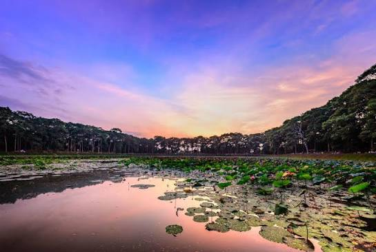

Dịch vụ du lịch nổi bật

Lưu trú cộng đồng
Khám phá không gian nghỉ ngơi gần gũi với thiên nhiên và cuộc sống người dân địa phương.

Ẩm thực địa phương
Thưởng thức các món ăn đặc sản và hương vị ẩm thực đặc trưng của Trà Vinh.

Tham quan, trải nghiệm
Khám phá cảnh đẹp, tìm hiểu văn hóa Khmer và tham gia các hoạt động địa phương.